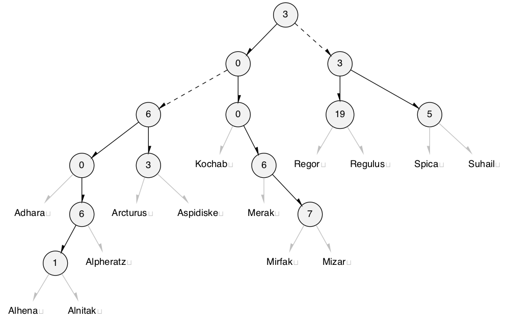
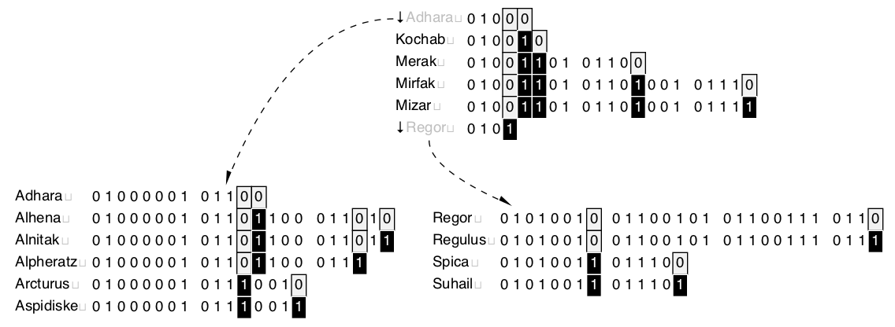
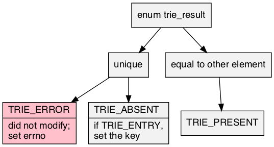

Header ../src/trie.h requires ../src/bmp.h; examples ../test/test_trie.c; article ../doc/trie/trie.pdf.

A <t>trie is a prefix-tree, digital-tree, or trie: an ordered set or map of byte null-terminated immutable key strings allowing efficient prefix queries. The implementation is as Morrison, 1968 PATRICiA: a compact binary radix trie that acts as an index, only storing the where the key bits are different. The keys are grouped in fixed-size nodes in a relaxed version of a B-tree, as Bayer, McCreight, 1972 Large, where the height is no longer fixed.
While the worse-case run-time of querying or modifying is bounded by Ο(|string|), Tong, Goebel, Lin, 2015, Smoothed show that, in an iid model, a better fit is Ο(log |trie|), which is seen and reported here. It is not stable.

<t> that satisfies C naming conventions when mangled.const char *. Requires implementation of <pT>string_fn <t>string to convert <pT>key to a const char *.<t>key, that picks out <pT>key from <pT>entry.<name><trait>to_string be declared as <pTR>to_string_fn.trie.h multiple times with TRIE_EXPECT_TRAIT and then subsequently including the name in TRIE_TRAIT.typedef TRIE_KEY <pT>key;
The default is const char *. If one sets TRIE_KEY to a different type, then one must also declare <t>string as a <pT>string_fn.
typedef TRIE_ENTRY <pT>entry;
If TRIE_ENTRY is set, one must provide <t>key as a <pT>key_fn; otherwise a set and <pT>entry and <pT>key are the same.
typedef <pT>entry *<pT>remit;
Remit is either an extra indirection on <pT>entry on TRIE_ENTRY or not.
typedef const char *(*<pT>string_fn)(<pT>key);
Transforms a <pT>key into a const char *.
typedef void(*<pTR>to_string_fn)(const <pT>key, const <pT>entry *, char(*)[12]);
Type of TRIE_TO_STRING needed function <tr>to_string. Responsible for turning the read-only argument into a 12-max-char output string. <pT>value is omitted when it's a set. Only available to named traits, the TRIE_TO_STRING of the anonymous trait is implicitly the string itself.
enum trie_result { TRIE_RESULT };
A result of modifying the table, of which TRIE_ERROR is false.

| Modifiers | Function Name | Argument List |
|---|---|---|
| static void | <T>next | cur |
| static struct <T>cursor | <T>prefix | trie, prefix |
| static <pT>remit | <T>entry | cur |
| static struct <t>trie | <t>trie | |
| static int | <T>from_array | trie, array, array_size |
| static void | <t>trie_ | trie |
| static void | <T>clear | trie |
| static <pT>remit | <T>match | trie, string |
| static <pT>remit | <T>get | trie, string |
| static enum trie_result | <T>try | trie, key, entry |
| static int | <T>remove | trie, string |
| static const char * | <TR>to_string | box |
static void <T>next(struct <T>cursor *const cur)
Advancing cur to the next element.
trie|)static struct <T>cursor <T>prefix(struct <t>trie *const trie, const char *const prefix)
trie, use the empty string.prefix in trie. It is valid until a topological change to trie. Calling <T>next will iterate them in order.trie|)static <pT>remit <T>entry(const struct <T>cursor *const cur)
cur.static struct <t>trie <t>trie(void)
Zeroed data (not all-bits-zero) is initialized.
static int <T>from_array(struct <T>trie *const trie, <pT>type *const *const array, const size_t array_size)
Initializes trie from an array of pointers-to-<T> of array_size.
array_size)static void <t>trie_(struct <t>trie *const trie)
Returns any initialized trie (can be null) to idle.
trie|)static void <T>clear(struct <t>trie *const trie)
Clears every entry in a valid trie (can be null), but it continues to be active if it is not idle.
trie|)static <pT>remit <T>match(const struct <t>trie *const trie, const char *const string)
Looks at only the index of trie for potential string (can both be null) matches. Does not access the string itself, thus will ignore the bits that are not in the index. If may not have a null, the remit is stuck as a pointer on the end and a trie_result is returned.
string or null.string|)static <pT>remit <T>get(const struct <t>trie *const trie, const char *const string)
If may not have a null, the remit is stuck as a pointer on the end and a trie_result is returned.
string match for trie or null, (both can be null.)trie|) iidstatic enum trie_result <T>try(struct <t>trie *const trie, const <pT>key key, <pT>entry **const entry)
Adds key to trie if it doesn't exist already.
If TRIE_ENTRY was specified and the return is TRIE_ABSENT, the trie is in an invalid state until filling in the key with an equivalent key. (Because <pT>key is not invertible in this case, it is agnostic of the method of setting the key.)
TRIE_ENTRY is set will this parameter exist.TRIE_ERROR, errno is set and entry is not; TRIE_ABSENT, key is added to trie; TRIE_PRESENT, the value associated with key.trie|)static int <T>remove(struct <t>trie *const trie, const char *const string)
Tries to remove string from trie.
string is not in trie, returns false without setting errno.string would cause an overflow with the rest of the strings.trie|)static const char *<TR>to_string(const <pT>box *const box)
src/to_string.h: print the contents of box in a static string buffer of 256 bytes, with limitations of only printing 4 things in a single sequence point.
2020 Neil Edelman, distributed under the terms of the MIT License.